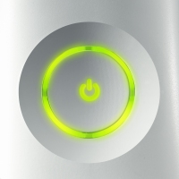

Xbox 360 Launch Dates Announced!
Just before the start of the Tokyo Game Show, Microsoft announced the release dates for the Xbox 360
By CESPage.com Xbox, Published 15th September 2005
Tokyo-Fueling global anticipation for the arrival of its powerful new video game and entertainment system
Microsoft today announced that Xbox 360 will arrive on store shelves Tuesday, November 22 in North America, Friday, December 2 in Europe, and Saturday, December 10 in Japan. The announcement, made on the eve of Tokyo Game Show 2005, marked the first time that a game console will be launched in three territories in the same time frame. In preparation for what is expected to be massive worldwide demand for the new system, Microsoft also announced that Xbox 360 manufacturing is under way, with state-of-the-art facilities producing millions of units ultimately bound for frenzied gamers' homes from Osaka, Japan, to Oxford, England, and Orlando, Florida.
"This holiday season, gamers in Japan, Europe and North America pining to experience jaw-dropping high-definition graphics, unmatched online play and compelling digital entertainment features of Xbox 360 will finally have the chance," said Robbie Bach, chief Xbox officer for Microsoft. "Renowned development studios around the world are busy putting the finishing touches on their Xbox 360 games. We expect a strong portfolio of titles on launch day and through the holidays that will appeal to fans of every genre and gamers in every region, and with more than 200 games currently in development, continuous new additions to the library are on the way."
Bach and other Microsoft executives, headlining a series of events that open Tokyo Game Show, will detail the company's strategy for success in Japan. More than 40 publishers in Japan, including Bandai Co. Ltd., Capcom Co. Ltd., Koei Co. Ltd., Konami Corp., Namco Ltd., Sega Corp., Square Enix Co. Ltd. and Tecmo Ltd., have pledged their support for Xbox 360, joining the ranks of the best publishers from around the world. As the ultimate canvas for game developers, Xbox 360 will inspire a new wave of innovation in game play, storytelling and artistry never before seen in video games.
Promising to capture the imagination of Japanese gamers, new titles and established franchises such as Dead or Alive 4, Ridge Racer 6, NINETY-NINE NIGHTS, Dead Rising, and FINAL FANTASY XI will be available on Xbox 360 in the months to come. With support for high-definition output with anti-aliasing, and Dolby 5.1 surround sound, all Xbox 360 games will deliver smooth, cinematic experiences that scream off the screen.
In addition to the impressive line-up of titles both in Japan and around the world, you'll soon be able to enjoy the next generation of the Xbox Live service, the Emmy-award-winning online games and entertainment network. With Xbox 360 and the Xbox Live service, you can play online in a community of millions, connect with friends using voice and video chat, download new content, build online profiles and experience new modes of entertainment. Xbox 360 is also the ultimate amplifier for music, movies and photos stored on an array of devices including MP3 players, digital cameras and Microsoft Windows XP-based PCs. The console makes it easy for you to enjoy all their digital content in the living room, on the best TV and speakers in the house.
Tokyo Game Show marks the first time that consumers will be able to experience the power of Xbox 360 firsthand. A number of key titles will be on display at the Xbox 360 booth:
- (eM)-eNCHANT-arM (FromSoftware Inc.)
- Bomberman - Act Zero (Hudson Soft Co. Ltd.)
- Call of Duty 2 (Activision Inc.)
- CHROMEHOUNDS (Sega)
- Dead Rising (Capcom)
- Dynasty Warriors 5 Special (Koei Co. Ltd.)
- Everyparty (Microsoft Game Studios)
- Far East of Eden - Ziria (Hudson Soft)
- FINAL FANTASY XI (Square Enix Co. Ltd.)
- Frame City Killer (Namco)
- Gears of War (Microsoft Game Studios)
- Kameo: Elements of Power (Microsoft Game Studios)
- Mobile Suit Gundam (working title) (Bandai Co. Ltd.)
- Need for Speed Most Wanted (Electronic Arts)
- NINETY-NINE NIGHTS (Microsoft Game Studios)
- The Outfit (THQ)
- Project Gotham Racing 3 (Microsoft Game Studios)
- Resident Evil 5 (Capcom)
- Ridge Racer 6 (Namco)
- Rumble Roses XX (working title) (Konami)
- Shutoku Battle (working title) (Genki Co. Ltd.)
- Sonic the Hedgehog (Sega)
- Saint's Row (THQ)
- Test Drive Unlimited (Atari Inc.)
- Tom Clancy's Ghost Recon Advanced Warfighter (Ubisoft Entertainment)
- World Air Force (tentative title) (Taito Corp.)
- Wrestle Kingdom (Yuke's Co. Ltd.)
Microsoft also announced Japanese pricing of Xbox 360. Japanese gamers looking for the ultimate digital entertainment thrill ride and best value right out of the box may purchase an Xbox 360 system, which comes fully loaded with a 20GB detachable Xbox 360 Hard Drive for storing music, video and games, an Xbox 360 Wireless Controller, an Xbox 360 Media Remote control, an Xbox 360 Headset, a Component HD-AV Cable for connecting to component and composite television inputs, an Ethernet cable, and batteries, at 37,900 JPY.*
* Actual retail prices may vary.
Source : Microsoft Xbox Press